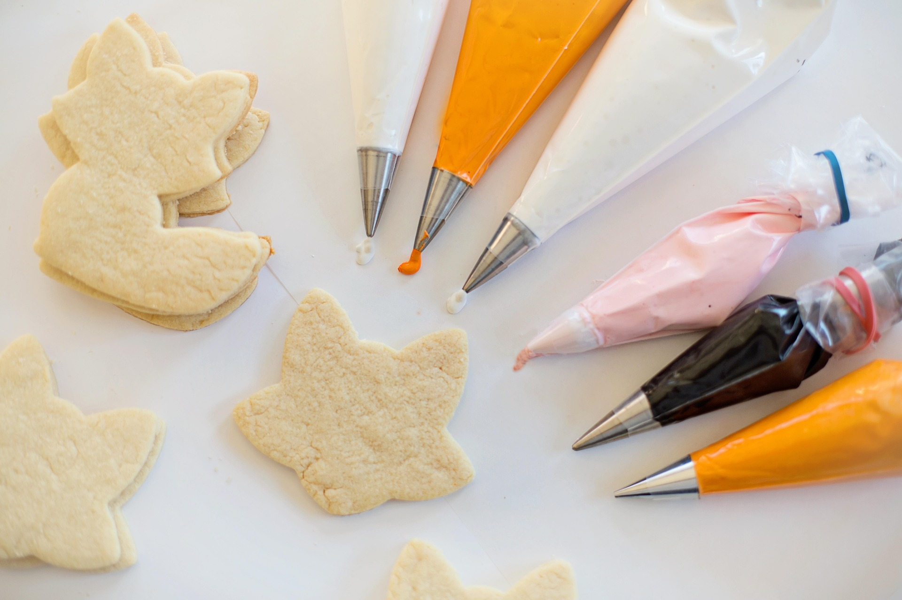
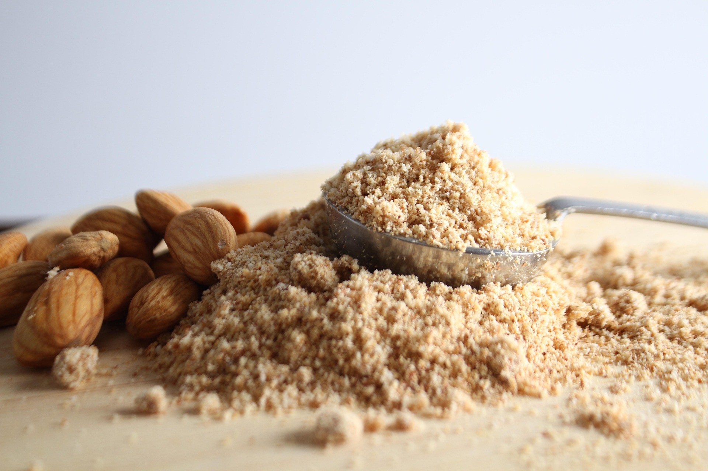
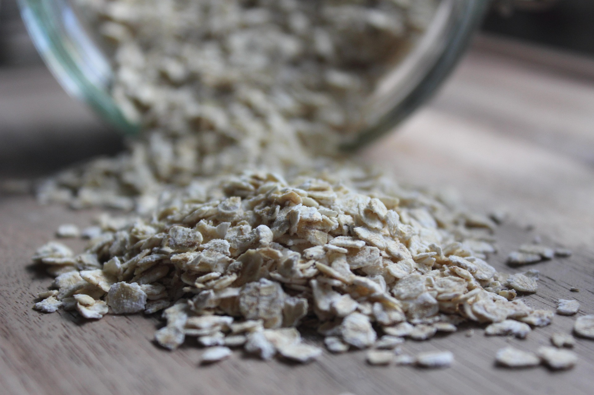
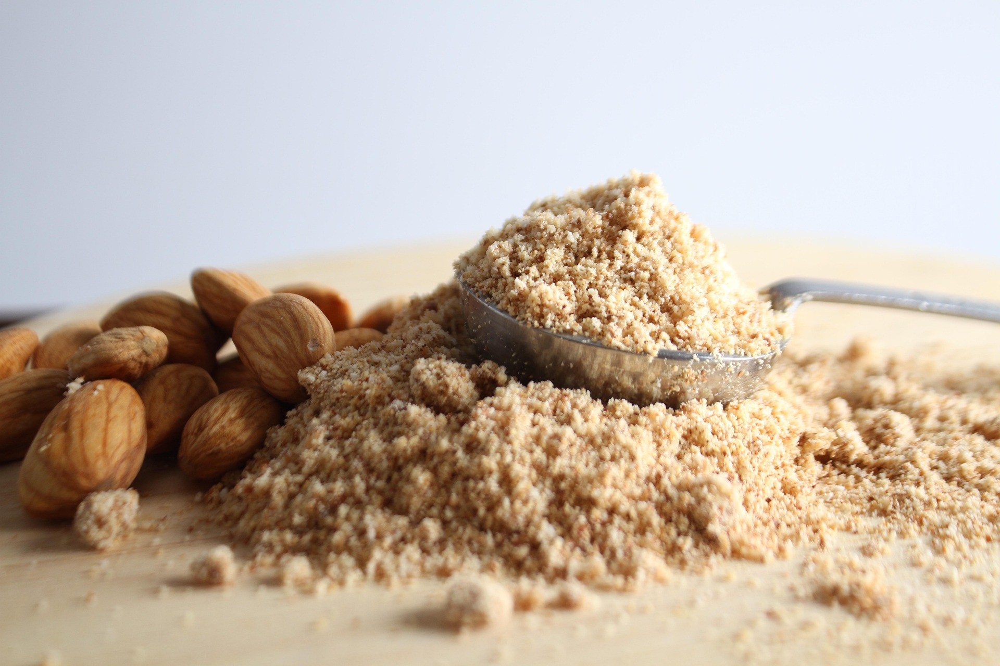
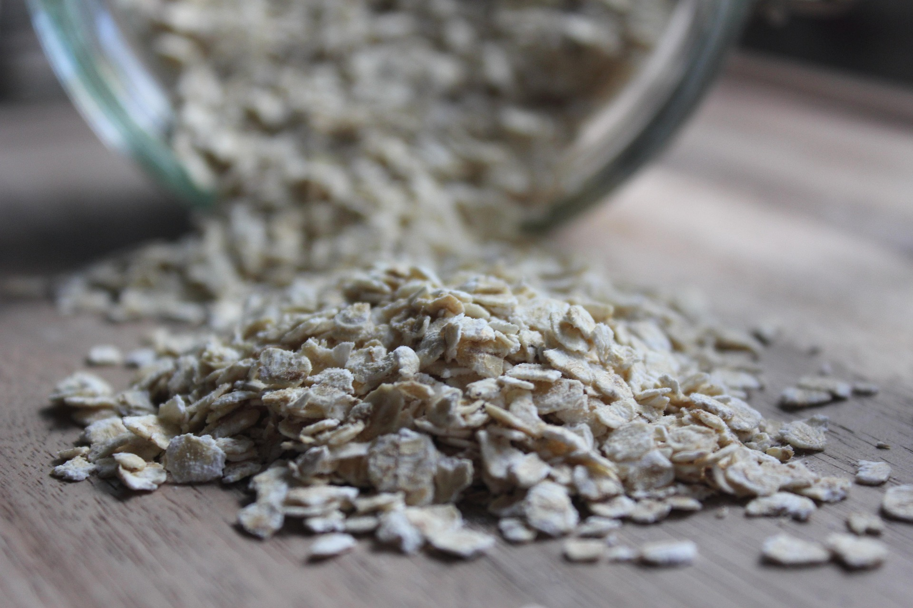

Enjoy Baked Goods Gluten Free
Welcome to Gluten Free Baking Made Easy! Here you’ll find simple, delicious, and approachable gluten free recipes for all occasions and for all skills levels.

There are plenty of gluten free flours to choose from, but they all have small differences. The three main gluten free flours are Rice, Almond and Oat.
 


